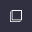
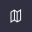
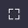
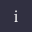

О сервисе «Мой город»
Типы проектов
На карте размещаются проекты двух типов, различающихся по стадиям работы над градостроительной документацией:
- разработка нового документа, для эффективности которой производится сбор идей;
- презентация проекта разработанных документов, к которым принимаются предложения по изменению.
Идеи
Горожане могут предложить свои идеи, касающиеся существующего положения и перспектив развития территорий. Разработчики рассмотрят и используют их для планировочных решений.
Предложения
После этапа разработки в проекты градостроительных документов могут вноситься изменения на основе предложений горожан. Те, кто считает нужным доработать предложенные решения, могут оставить свои предложения на карте.
Функции карты
Ниже представлены справочные материалы по функциям карты, доступным для пользователя. Некоторые функции могут быть в другом порядке.
-
Добавить идею
Кнопка выбора точки на карте для добавления идеи с привязкой к этой точке.
-
Поиск объектов
ЭПоиск производится по названиям объектов в пределах выбранного слоя. Задать область поиска можно по всей карте или ограничив область вручную.
-

Слои
Зоны и объекты разных типов собраны в слои, между которыми можно переключаться, выбирая для отображения нужные объекты, и смотреть их свойства.
-

Подосновы
Выбор картографических подложек, доступных для отображения на базовом слое, подоснове для карты.
-
Масштаб
Кнопки приближения и отдаления карты.
-

Полноэкранный режим
По клику карта разворачивается на весь размер окна браузера.
-
Начальная позиция
Кнопка возвращает к первоначальному положению и масштабу карты.
-
Поделиться ссылкой
Можно скопировать ссылку на открытые вами слои и положение карты.
-

О проекте
Информационная справка о проекте.
-
Условные знаки
Список обозначений с графическим отображением состояний зон и объектов и расшифровкой их значений.
-
Добавить идею/предложение
Кнопка для открытия окна добавления предложения.
Добавление предложения
После нажатия на кнопку «Добавить предложение» будет открыто окно с полями для заполнения. Заполнив их в несколько шагов, вы сможете отправить предложение на модерацию.
Локация и категория
Укажите точку, маршрут или область на карте. Выберите категорию из списка. Изучить категории можно в описании каждого проекта.
Описание
Назовите идею или предложение так, чтобы была понятна его суть. Опишите подробнее ваше предложение и, при необходимости визуализации, приложите картинки.
Модерация и список идей
После прохождения модерации ваше предложение добавится на карту или будет отклонено для доработки. Причин отклонения может быть несколько: дублирование предложений, спам, некорректные формулировки в виде мата и оскорблений. Некоторые темы не входят в сферу компетенций разработчиков градостроительной документации, об этом подробнее можно прочесть на странице категорий в каждом проекте.